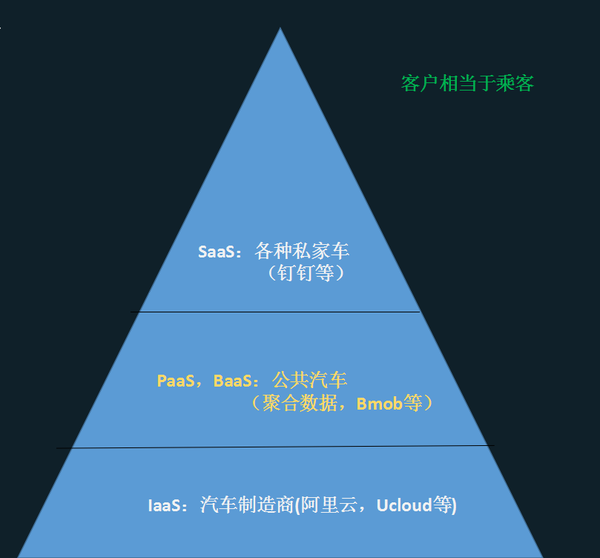

本文将介绍SaaS，BaaS，PaaS和IaaS这四种云计算服务模式，并分析之间的联系和区别。
四种服务模式介绍
- SaaS（Software as a Service）：软件即服务，SaaS公司提供完整并可直接使用的应用程序，用户通过网页浏览器即可接入使用。比较知名的SaaS有GoToMeeting，WebEx和Salesforce。
- BaaS（Backend as a Service）：后端即服务，为移动应用开发者提供后端云服务，包括云端数据存储、账户管理和消息推送等，简化了应用开发流程。这里推荐一篇对BaaS介绍的文章。
- PaaS（Platform as a Service）：平台即服务，也被叫做中间件。用户通过Internet可以使用PaaS公司在网上提供的各种开发和分发应用的解决方案，比如虚拟服务器和操作系统等，软件的开发和运行都可以在提供的平台上进行。不仅节约了硬件成本，更大大提高了协作开发的效率。比较知名的PaaS有Google App Engine，Microsoft Azure和AppFog。
- IaaS（Infrastructure as a Service）：基础设施即服务，用户通过租用IaaS公司的服务器，存储和网络硬件，利用Internet就可以完善地获取计算机基础设施服务，大大节约了硬件成本。比较知名的IaaS有Amazon，Microsoft和Aliyun等。
四种服务模式的关系
- PaaS构建在IaaS之上，在基础架构之外还提供了业务软件的运行环境。
- SaaS同PaaS的区别在于，使用SaaS的不是软件的开发人员，而是软件的最终用户。
- BaaS属于PaaS的范畴，但两者也有区别。BaaS简化了应用开发流程，而PaaS简化了应用部署流程。

Reference
About me

- GitHub：AnSwErYWJ
- Blog：http://www.answerywj.com
- Email：yuanweijie1993@gmail.com
- Weibo：@AnSwEr不是答案
- CSDN：AnSwEr不是答案的专栏
 This work is licensed under a Creative Commons Attribution-ShareAlike 4.0 International License.
This work is licensed under a Creative Commons Attribution-ShareAlike 4.0 International License.
本作品采用知识共享署名-相同方式共享 4.0 国际许可协议进行许可。